Free firmware for the FlightWall mini
Your wall, set free.
FreeBirdWall keeps everything your FlightWall mini already does, needs no subscription, and adds a dashboard on your phone, flight progress bars, live weather, your own trips, stats and games.
The installer needs Chrome or Edge on a computer. On your phone now? Send yourself this page.
- Free & open source
- No subscription
- About 15 minutes
- Go back any time
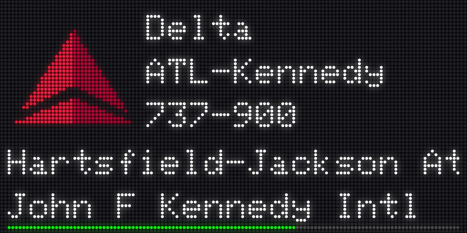
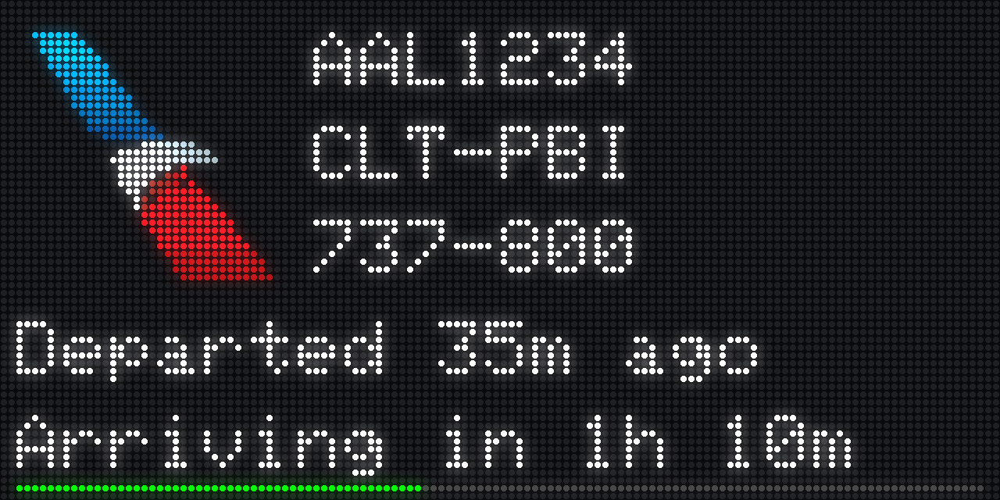
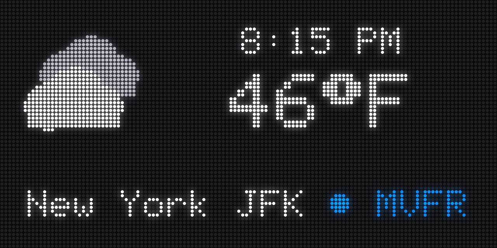
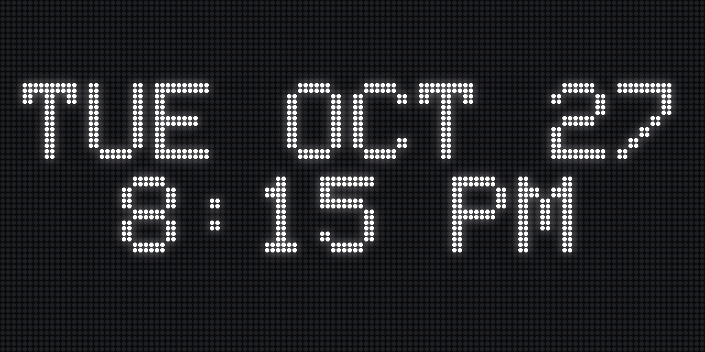
What you get
Change anything from the couch.
The dashboard lives on the wall itself. Open it from any phone or computer on your Wi-Fi: no app to install, no account to make.
Live preview
See it before you save it.
Every display setting opens with a live picture of the wall, drawn by the wall's own code. Change the layout, the title or the units and the picture changes at once, with your wall's real flights.
Set brightness and sleep hours, and rename airports the way you say them: "Kennedy", not "John F Kennedy Intl".
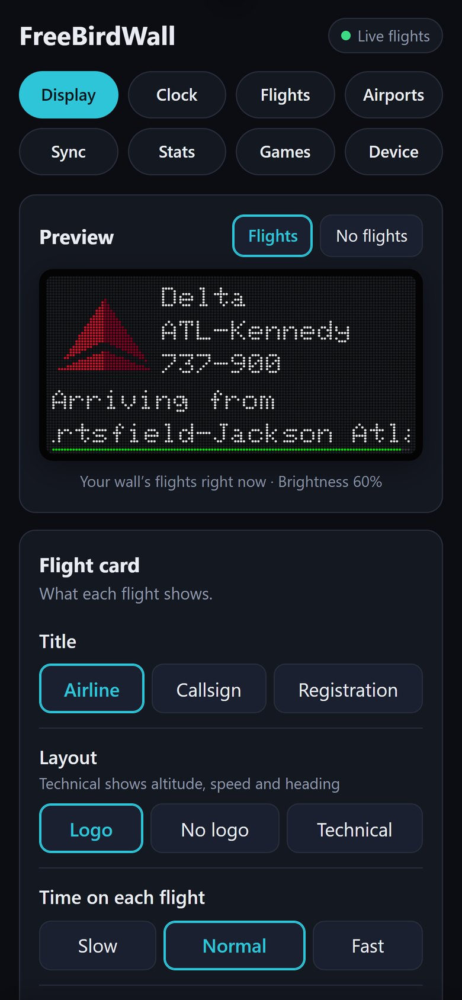
Areas on a map
Point at the sky you care about.
Your watch areas are circles on a map. Search for a place or tap to drop one, drag its pin to move it, and set its size with a slider. Up to five areas, each with its own altitude range.
No more typing coordinates, though you still can.
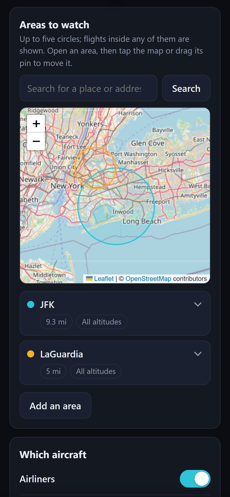
Progress bars
How far along is that flight?
Turn on Progress bar and every flight shows how far it is between its two airports, along the bottom of the wall. One glance tells you whether it just took off or is nearly home.
Your flight card
Tap a line, choose what it says.
Tap any line on the live preview and pick what goes there: airline, route, aircraft, origin, destination, altitude, speed, heading or climb rate. The picture changes as you choose.
Show the flight number instead of the callsign, altitudes as flight levels, compact number styles, and keep each flight up for as long as 30 seconds.
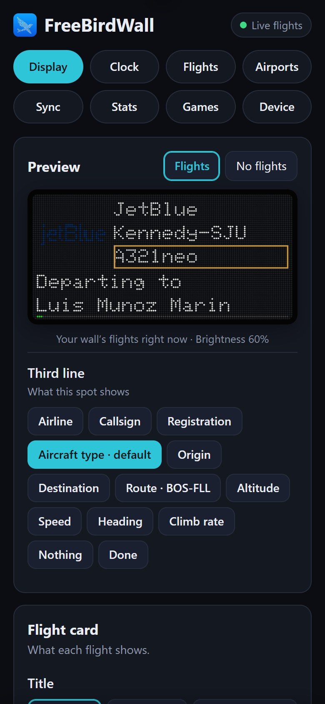
Weather
When the sky is quiet, the weather.
Live airport weather from the station nearest you, or one you choose. Pick a big temperature, a summary of wind, visibility, ceiling and temperature, or the raw METAR for pilots, in the units you like.
It can also take a turn between flights, alongside the clock, so busy skies still show it. It works on the free flight data too.
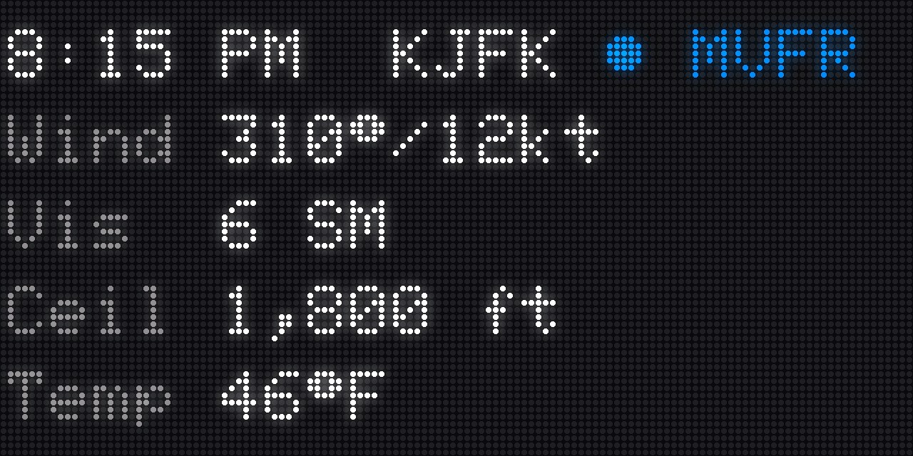
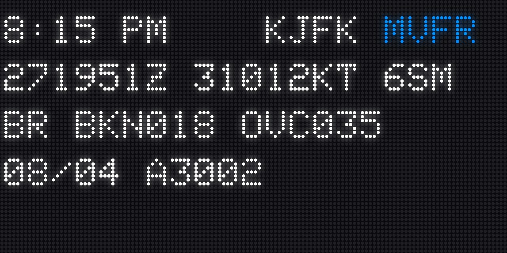
Sync & tracked flights
Your trips, on the wall at home.
Add your flights or import a calendar file from a crew or calendar app. The wall counts down to departure, follows the plane while it is in the air, and shows what comes next, with a one-line message for the people at home.
You can also follow any flight wherever it is, with real times when you add a FlightAware key.
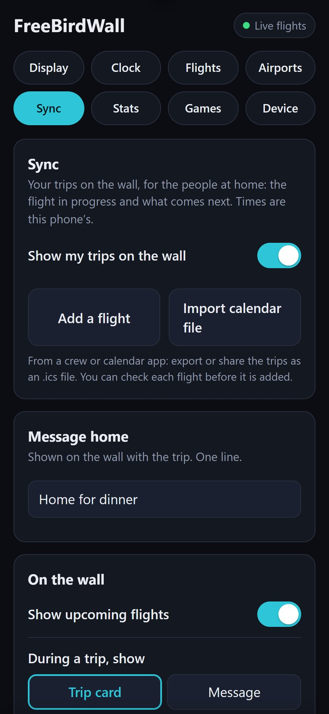
Analytics & stats
Everything your wall has seen.
Computed right on the wall. No cloud account, no subscription. Switch between today, this week and the last 30 days with one tap.
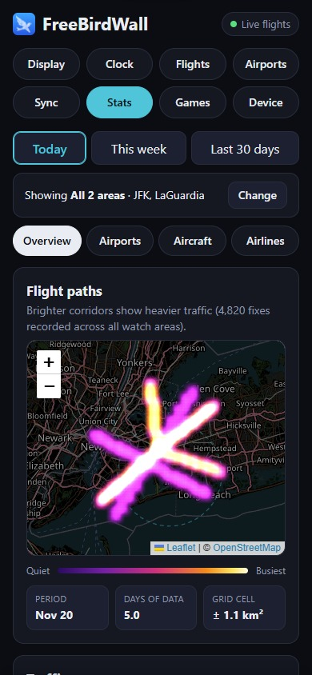
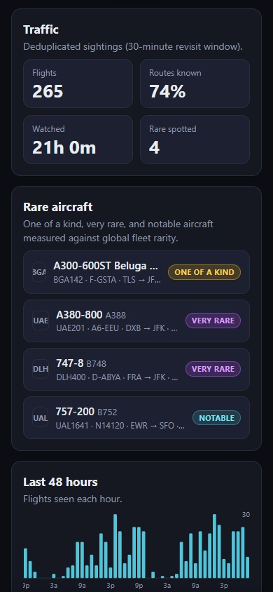
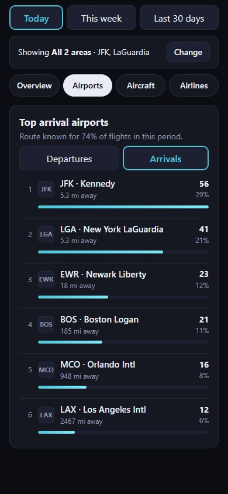
Explore anywhere
Curious about Heathrow tonight?
Search any city or airport in the world and watch its live traffic and flight trails build up on the map. Like what you see? Add to wall turns it into one of your watch areas.
You can switch between your areas and resize them right here, too.
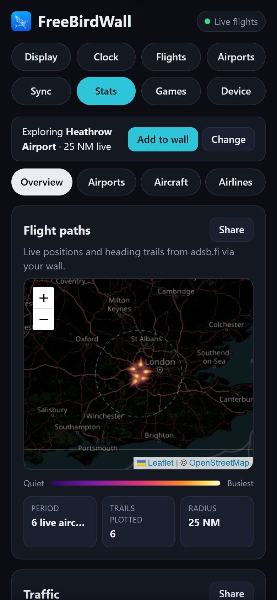
Share cards
Show it off, not where you live.
Every Stats card has a Share button that makes a tidy picture for your group chat. The cards never print your area's name or a map of it, only the shape of your sky.
Today and this week are compared with yesterday and the week before, and only when the wall has watched long enough for the comparison to be fair.
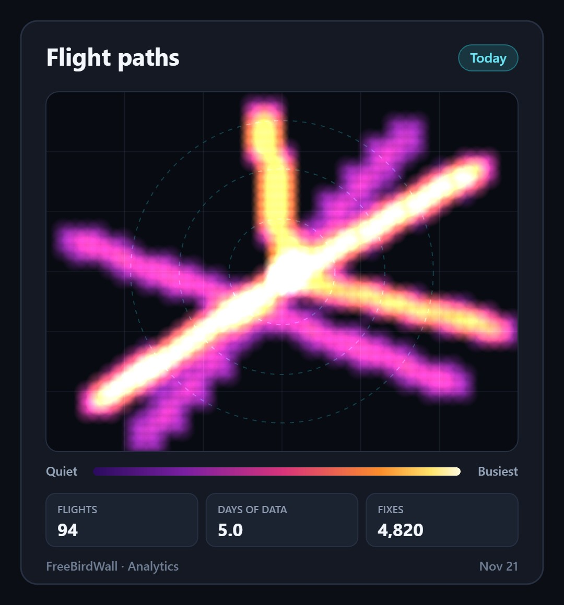
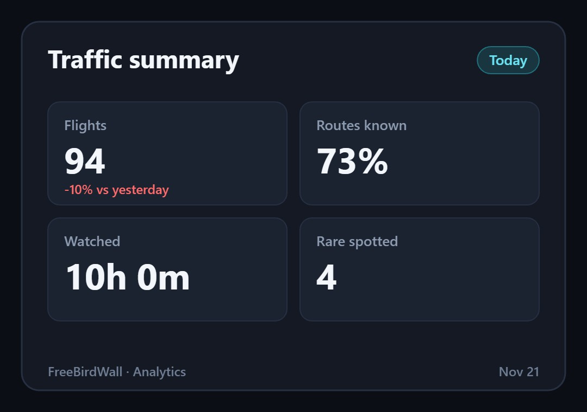
Games
It is also a little arcade.
Play Pong and Breakout on the LEDs with your phone as the controller. Two phones can play Pong against each other, or one can take on the computer.
Guests scan a code on the wall and join, no sign-in needed. When nobody has played for a minute, the wall goes back to showing flights.
And the rest
The small things add up.
Free flight data
Use the community services adsb.fi and adsbdb instead of the FlightWall service, if you like.
Clocks your way
12 or 24 hours, up to two extra cities, and a turn between flights if you like.
Names that fit
Long airline and airport names are shortened, and scroll if they are still too long.
Aircraft silhouettes
When an airline has no logo, the wall draws the aircraft instead, by exact type where it can.
The FlightWall app still works
Settings you change in the app reach the wall too. Turn that off whenever you like.
Logos kept current
The wall keeps the maker's airline logos and icons up to date from their own signed updates.
Built to be undone
Careful with your wall.
Trying new firmware should not feel like a gamble. This is what stands between you and a bad day.
The original firmware stays
FreeBirdWall is written next to the original, not over it. Going back only changes which one starts.
A full backup first
The installer saves a complete copy of your wall to your computer and checks it before it changes anything.
It checks the board
The installer only continues on the exact hardware this firmware was made for. If anything differs it stops, untouched.
Your data stays home
The dashboard runs on the wall, on your Wi-Fi. The one exception: your phone loads the map from OpenStreetMap.
Install
One cable, one web page, about 15 minutes.
Nothing to download. The installer runs in your browser and talks to the wall over USB; nothing is sent anywhere.
Open the back
Leave the wall on power. Plug a USB-C data cable into the small blue controller board, and into your computer.
Run the installer
It checks the board, saves a backup, installs FreeBirdWall and watches the wall start. Your Wi-Fi and settings stay.
Scan the code
The wall shows a QR code with its address. Scan it with your phone and the dashboard opens.
You need: a FlightWall mini already set up with the FlightWall app, a computer with Chrome or Edge, a USB-C data cable (some only charge), and a small screwdriver.
Questions
Before you open the back.
Is this made by FlightWall?
No. FreeBirdWall is not made by or connected with the makers of FlightWall. FlightWall is their name; it is used here only to say which hardware this runs on.
What does it cost?
Nothing. It is free, MIT-licensed and open source, and it needs no subscription. Some optional extras, like real times for tracked flights, use your own FlightAware key.
Can I go back to the original firmware?
Yes, at any time. The original stays on the wall next to FreeBirdWall. Plug in the cable, open the installer and choose to start the vendor firmware again, or restore the backup from your first install.
Which walls does it work on?
The FlightWall mini. The installer checks the chip, its memory and its layout first, and stops before changing anything if your wall has different hardware.
Can I install it from my phone?
No. The install needs Chrome or Edge on a Windows, Mac, Linux or ChromeOS computer, because phones, Safari and Firefox cannot talk to the wall over USB. After that, everything happens on your phone.
How do I update later?
Plug in the cable and open the installer again; it always carries the newest version. It keeps your settings and sign-ins.
Something went wrong. Now what?
The troubleshooting guide covers cables, connection trouble and a wall that will not start. If the firmware ever fails three times in a row, it starts in a safe mode so the installer can put things right.
Ready when your wall is.
Fifteen minutes from now it could be showing how far along that flight is.